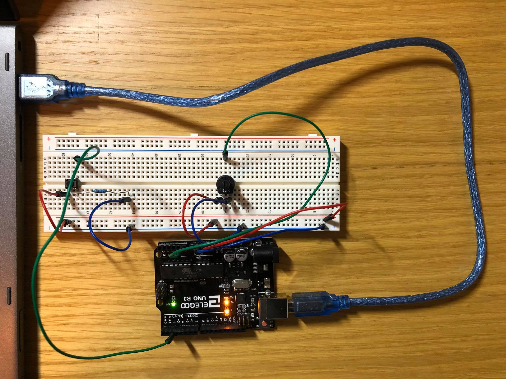

Jesse Du's Assignment 5!

A push button with a 10k resistor connected to digital pin 2 and a separate potentiometer connected to analog pin 0; powered by Arduino's 5V supply.
The push button requires a resistor with minimum 125 Ohm resistance, per Ohm's Law as V=5 and I=0.040 (maximum current for a pin). I chose 10K for standard safety. The potentiometer does not require any extra resistor as it is not connected with any other circuit element.

Pressing the push button enables me to adjust the brightness of the computer screen by turning the potentiometer. The idea of using potentiometer to adjust brightness comes from p5.js tutorial on Medium.com.
Below is the Arduino code snippet:
const int buttonPin = 2; // pin number for push button
const int potPin = 0; // pin number for sensing potentiometer
int brightness = 0; // variable indicating brightness
void setup() {
Serial.begin(9600); // initialize the serial for communication
}
void loop() {
int button = digitalRead(buttonPin); // read from the button
int potValue = analogRead(potPin); // read from the potentiometer
brightness = map(potValue, 0, 1023, 0, 255); // map the value from potentiometer to the brightness
// control the brightenss based on the sensor value
Serial.println(brightness); // write the brightness to the serial port
delay(50); // delay 50 milliseconds
Serial.println(button); // write the button state to the serial port
delay(50); // delay 50 milliseconds
}
Below is the p5.js code snippet from sketch.js:
var serial; // variable to hold an instance of the serialport library
var portName = 'COM3' //rename to the name of your port
var datain; //some data coming in over serial!
var xPos = 0;
var minWidth = 600; // set min width for canvas
var minHeight = 400; // set min hieght for canvas
var width, height; // actual width and height for the sketch
function setup() {
serial = new p5.SerialPort(); // make a new instance of the serialport library
serial.on('list', printList); // set a callback function for the serialport list event
serial.on('connected', serverConnected); // callback for connecting to the server
serial.on('open', portOpen); // callback for the port opening
serial.on('data', serialEvent); // callback for when new data arrives
serial.on('error', serialError); // callback for errors
serial.on('close', portClose); // callback for the port closing
serial.list(); // list the serial ports
serial.open(portName); // open a serial port
// set the canvas to match the window size
if (window.innerWidth > minWidth) {
width = window.innerWidth;
} else {
width = minWidth;
}
if (window.innerHeight > minHeight) {
height = window.innerHeight;
} else {
height = minHeight;
}
// set up actual canvas
createCanvas(width, height);
}
// following functions print the serial communication status to the console for debugging
function printList(portList) {
for (var i = 0; i < portList.length; i++) {
print(i + " " + portList[i]);
}
}
function serverConnected() {
print('connected to server.');
}
function portOpen() {
print('the serial port opened.')
}
function serialError(err) {
print('Something went wrong with the serial port. ' + err);
}
function portClose() {
print('The serial port closed.');
}
function serialEvent() {
if (serial.available()) {
datain = Number(serial.readLine());
console.log(datain);
}
}
function draw() {
// set backgroun to black
background(0);
// when button is pressed
if (datain >= 1) {
// drawing based on data input from Arduino
var brightness = map(datain, 0, 255, 0, 255); // map input to the correct range of brightness
fill(brightness); // transfer the brightness to brightness of the color used for drawing
rect(0, 0, width, height); // specific drawing area
// inverse the color for drawing the text on background
var textColor = map(brightness, 0, 255, 255, 0);
fill(textColor);
// print text
textSize(16);
text("PRESS BUTTON TO START", 30, 30);
textSize(16);
text("TURN POTENTIOMETRE TO ADJUST BRIGHTNESS", 30, 50);
textSize(12);
text("BRIGHTNESS LEVEL: " + brightness, 30, 70); // displaying brightness
// when button is not pressed
} else if (datain == 0) {
textSize(16);
text("PRESS BUTTON TO START", 30, 30);
}
}